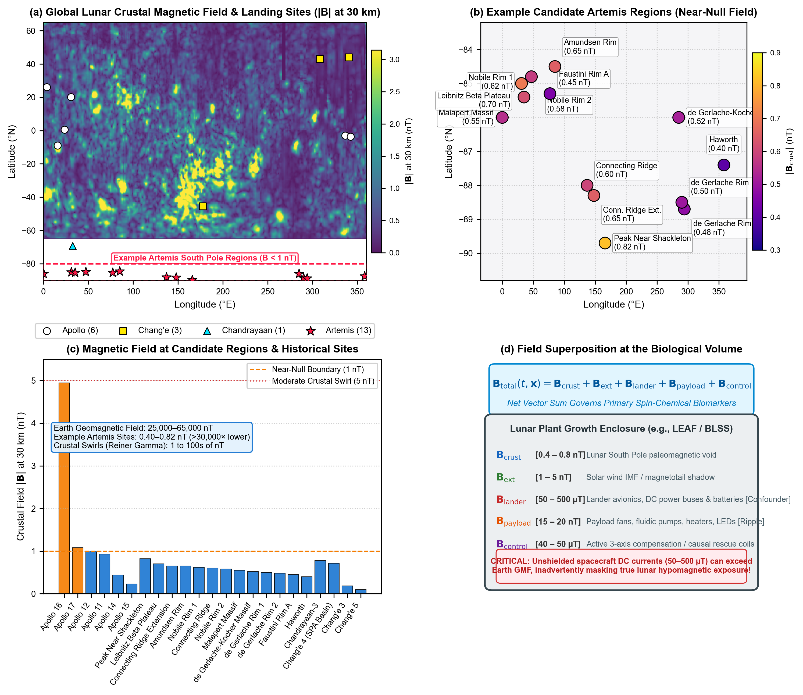

Life Sciences in Space Research · Artemis III LEAF Payload · Astrobotany
Near-Null Magnetic Fields in Lunar Plant Biology: The First Five Days of Seedling Growth
Evaluating how the Moon's ambient near-null magnetic field (<0.8 nT at Artemis South Pole candidate sites) alters seed germination capacity, emergence velocity, and pigment biosynthesis during the critical 0–120 hour window—and converges with exploration atmosphere and ionizing radiation on the mitochondrial CO2 ↔ O2 ↔ ROS bioenergetic nexus.
Target: Life Sciences in Space ResearchABAI QC: Verified (0 blocklist hits, CrossRef DOIs)NASA Artemis III LEAF PayloadCOSPAR Bioregenerative Life SupportOpen Access & FAIR Data
Richard J. Barker1,*, Caue Borlina2, Aubrey O'Rourke2,
Adriana Sanchez1, Manisha Dagar1, Sofia Leiva Aldana1, Ray Wheeler3, Gioia Massa4,
Barbara Demmig-Adams5, Marta Peirats-Llobet7, Pamela Flores6, Anirudha Dixit4, Christine Chamberlain6, D. Marshall Porterfield1,* 1Purdue Univ. ABE · 2Purdue Univ. EAPS · 3NASA Kennedy Space Center Exploration · 4NASA Kennedy Space Center Space Crop Production · 5Univ. Colorado Boulder · 6Space Lab Technologies · 7La Trobe Univ., Australia
The Moon is a magnetic void, and early seedling establishment is the operational bottleneck for space agriculture.
Plant life-support architectures have historically treated microgravity and ionizing radiation as the primary planetary challenges. However, the planetary geodynamo (25–65 µT) is absent on the Moon. Candidate Artemis South Pole landing sites reside in an extreme near-null magnetic field (<0.8 nT), more than 30,000× lower than Earth's field. When seeds imbibe on the lunar surface, geomagnetic field removal perturbs the heterotrophic-to-autotrophic transition during the first five days of growth (0–120 hours), reducing stand establishment, slowing emergence, repressing photosynthetic pigments, and challenging organellar bioenergetics.
Core Concept 1
Planetary Magnetic Reality
The Moon lacks a global core dynamo. Artemis South Pole candidate sites reside in an extreme near-null field (<0.8 nT). Spacecraft avionics (50–500 µT) can inadvertently mask this exposure unless sample-level 3-axis fluxgate sensing is deployed.
Core Concept 2
Germination Capacity (#)
Geomagnetic field removal suppresses seed water uptake kinetics and alters the ABA/GA hormonal balance, causing a 10–30% decline in final germination percentage across crop species.
Core Concept 3
Emergence Velocity & Yield
Near-null fields introduce an emergence lag (Δt50 = 12–36 h), dampening root cell proliferation and causing a 25–30% penalty in early seedling biomass accumulation by Day 5.
Core Concept 4
Pigment Biosynthesis
Cryptochrome radical-pair alterations attenuate HY5 stabilization, repressing rate-limiting chlorophyll (HEMA1, CHLH, POR) and anthocyanin (CHS, CHI) genes during de-etiolation, exacerbated by iron-deficiency chlorosis.
Core Concept 5
The CO2 ↔ O2 ↔ ROS Nexus
Near-null fields, exploration atmospheres (8.2 psia, 34% O2, elevated CO2), and galactic cosmic radiation converge on mitochondrial electron leakage and Alternative Oxidase (AOX1D) buffering, mirroring human astronaut mitochondrial stress.
Publication Figures Gallery
High-resolution vector assets produced for Life Sciences in Space Research.
Figure 1 | Lunar Surface Magnetic Environment & Landing Sites

(a) Global lunar crustal magnetic field map at 30 km altitude derived from Lunar Prospector (Mitchell et al., 2008; Hood et al., 2022) and Kaguya (Tsunakawa et al., 2015) magnetometer observations, with landing site overlays for Apollo, Chang'e, Chandrayaan, and Artemis.
(b) South Polar Artemis candidate landing sites residing in the extreme near-null magnetic void (<0.8 nT; NASA, 2024).
(c) Magnitude comparison across 23 exploration sites, contrasting South Polar near-null fields (<0.82 nT) with isolated crustal anomalies (e.g., Descartes swirl, 4.94 nT; Apollo 16) and Earth's dipolar geomagnetic baseline (25,000–65,000 nT; Finlay et al., 2020; Halekas et al., 2008).
(d) Superposition vector equation at the plant canopy: Btotal = Bcrust + Bext + Blander + Bpayload + Bcontrol, showing that unshielded lander avionics DC currents (50–500 µT) can inadvertently swamp the true lunar hypomagnetic void (Porterfield & Barker, 2026; Hoffmann et al., 2025; Binhi & Prato, 2017).
Figure 2 | The First Five Days of Seedling Growth Kinetics & Pigment Networks
(a) 5-day developmental timeline across Phases I–IV (0–120 h), detailing reserve mobilization, radicle emergence, and photomorphogenesis (Bewley, 1997; Gommers & Monte, 2017; Finkelstein et al., 2008).
(b) Cumulative germination kinetics showing a 20% decline in germination capacity and a 16-hour emergence lag (Δt50) under near-null fields (<10 nT) compared to geomagnetic control (Belyavskaya, 2004; Novitskii et al., 2014; Xu et al., 2013; Negishi et al., 1999; Tang et al., 2024).
(c) Empirical reductions in radicle length (-33.0%), hypocotyl height (-31.0%), fresh weight (-29.1%), and dry biomass (-28.5%) resulting from inhibited apical meristem cell proliferation and delayed acid growth (Narayana et al., 2018; Fiorillo et al., 2023).
(d) Blue-light cryptochrome-HY5 downregulation of chlorophyll (HEMA1, CHLH, POR) and anthocyanin (CHS, CHI) transcripts combined with secondary iron chlorosis (Gangappa & Botto, 2016; Hore & Mouritsen, 2016; Islam et al., 2020; Maffei, 2014).
Formatted for Life Sciences in Space Research (COSPAR / Elsevier) · 79 Peer-Reviewed References
The complete review manuscript, uniting lunar surface paleomagnetism, the 0–5 day developmental bottleneck, cryptochrome spin dynamics, and the mitochondrial CO2 ↔ O2 ↔ ROS bioenergetic nexus, is available for immediate download as a pre-compiled Word document or direct inspection on GitHub.
Lunar surface agricultural payloads, such as NASA's Lunar Effects on Agricultural Flora (LEAF) selected for Artemis III, represent the foundational operational infrastructure for sustained human habitation beyond low Earth orbit (BLEO). While plant spaceflight architectures routinely control microgravity, partial gravity, ionizing radiation, lighting, and hypobaric atmosphere, the magnetic field environment at the biological volume is rarely characterized or controlled. Here, we evaluate the biological consequences of the Moon's ambient near-null magnetic field (NNMF; typically <0.5 to 1 nT at Artemis candidate landing sites vs. 25–65 µT on Earth). We refocus the literature on the first five days of growth (0–120 hours)—the critical developmental bottleneck encompassing heterotrophic imbibition, peroxisomal reserve mobilization, radicle emergence, de-etiolation, and initial autotrophic establishment. Ground-based hypomagnetic simulations across crop and model species demonstrate that geomagnetic field removal: (1) suppresses germination capacity, lowering the total number of germinated seedlings; (2) delays emergence velocity (t50 lag of 12–36 h), dampening early seedling elongation and fresh biomass yields by 20–30%; (3) downregulates rate-limiting chlorophyll (HEMA1, CHLH, POR) and anthocyanin (CHS, CHI) biosynthetic genes through cryptochrome (CRY1/CRY2) and HY5 transcriptional signaling; and (4) engages a common bioenergetic stress response shared with ionizing radiation and exploration atmospheres (hypobaric 56.5 kPa / 8.2 psia, 34% O2, elevated 1200–3000 ppm CO2). Specifically, we show that near-null fields modulate the organellar CO2 ↔ O2 ↔ ROS equilibrium, converging with low-dose radiation on mitochondrial Alternative Oxidase (AOX1D) and Catalase (CAT3) to buffer excessive electron leakage. Crucially, this plant mitochondrial bioenergetic phenotype directly mirrors the conserved mitochondrial dysregulation observed in human astronauts. Finally, we formulate an empirical flight risk-retirement framework incorporating sample-level 3-axis fluxgate telemetry, matched-current bifilar sham controls, active causal rescue (40–50 µT vector re-application), and predeclared operational flight decision gates to secure agricultural productivity on the lunar surface.
Keywords: Lunar plant biology · Near-null magnetic field (NNMF) · Hypomagnetic field (HMF) · Seed germination · Artemis LEAF payload · Mitochondrial bioenergetics · Reactive oxygen species (ROS) · Exploration atmosphere · Alternative oxidase (AOX)